Kolkata
Where the creative side began. Acting, music and writing became early forms of expression, curiosity and storytelling.
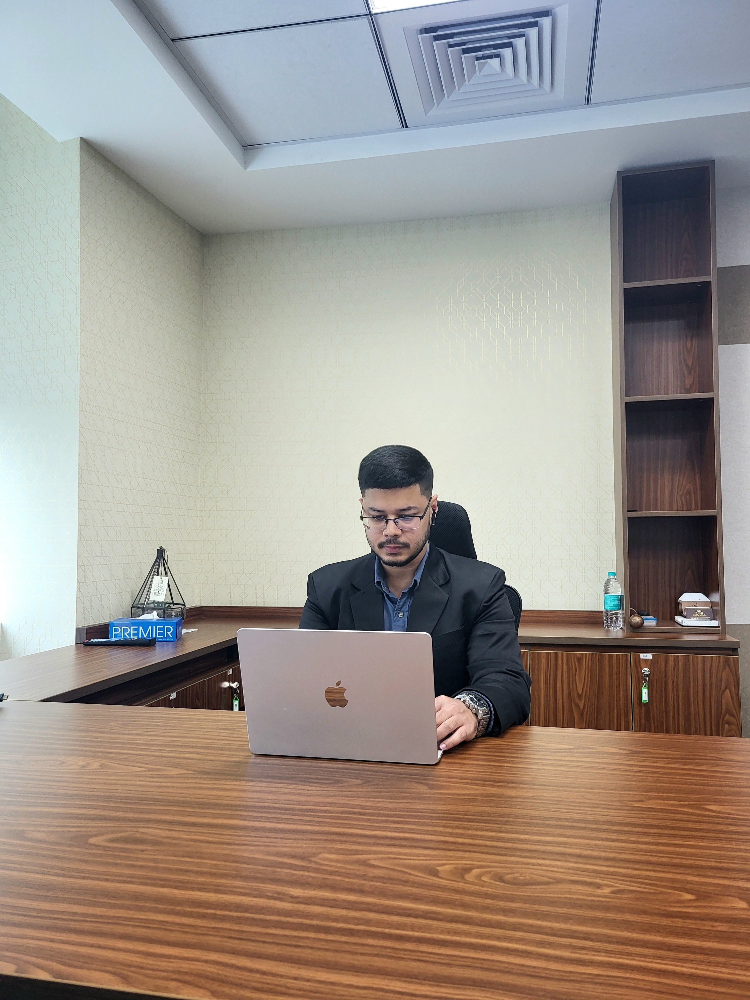
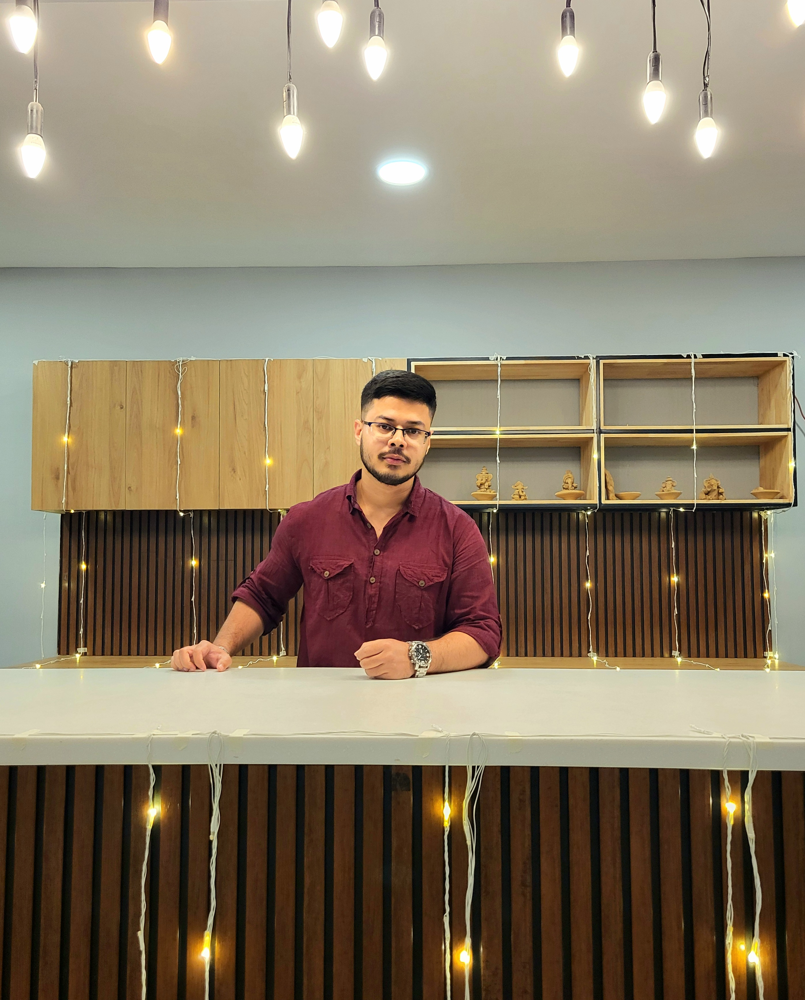
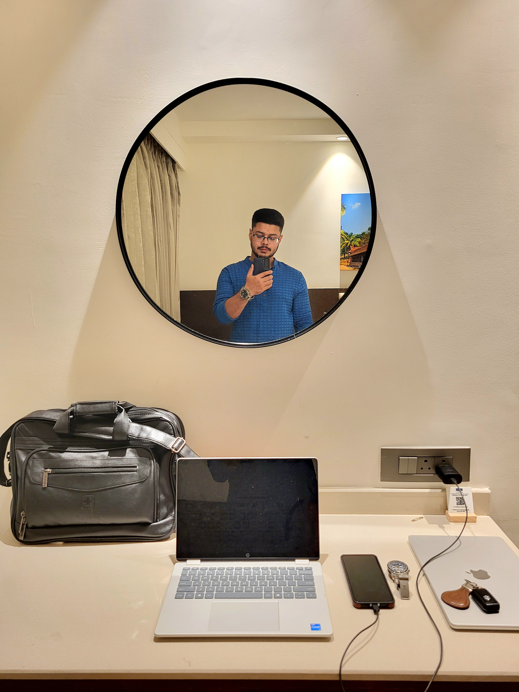
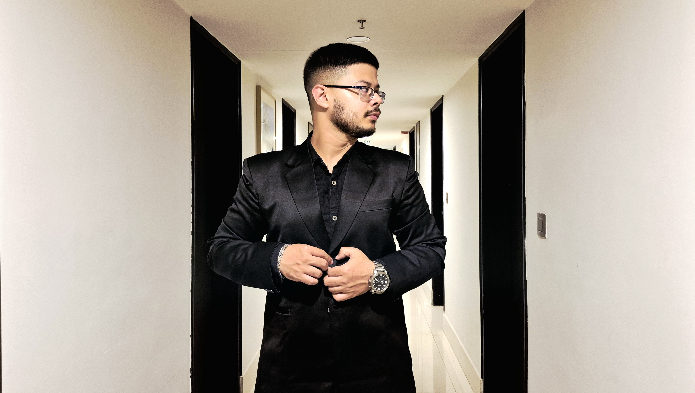
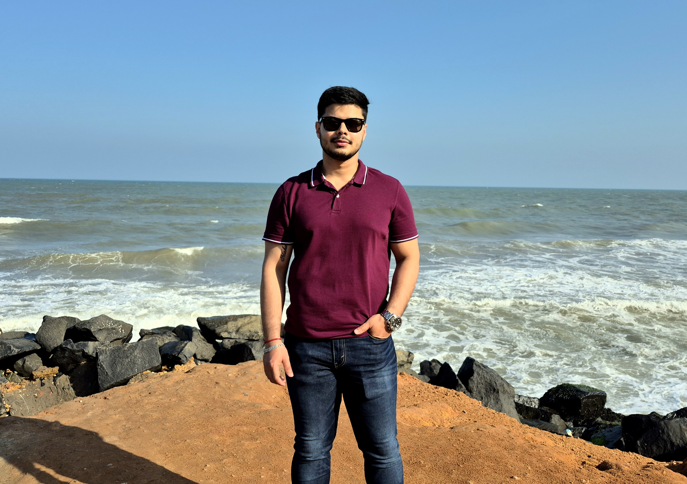
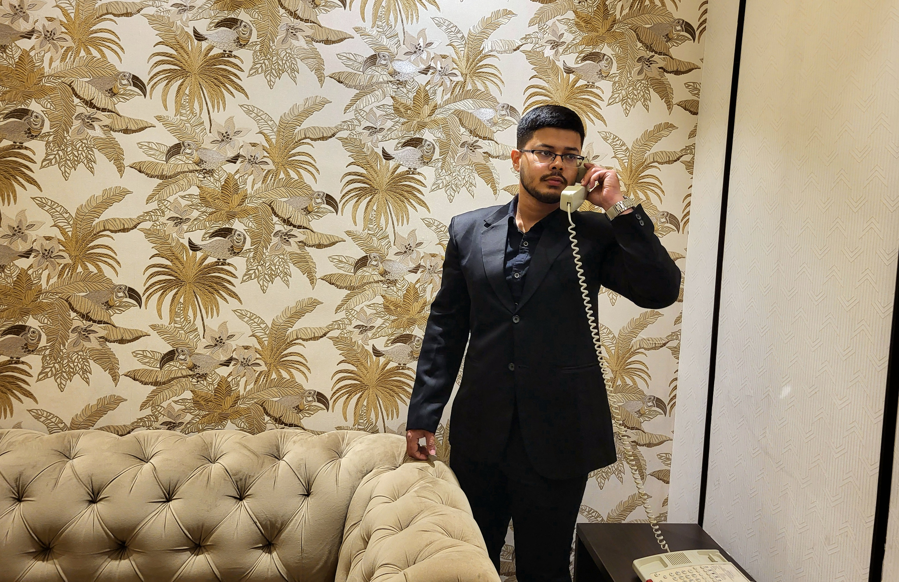
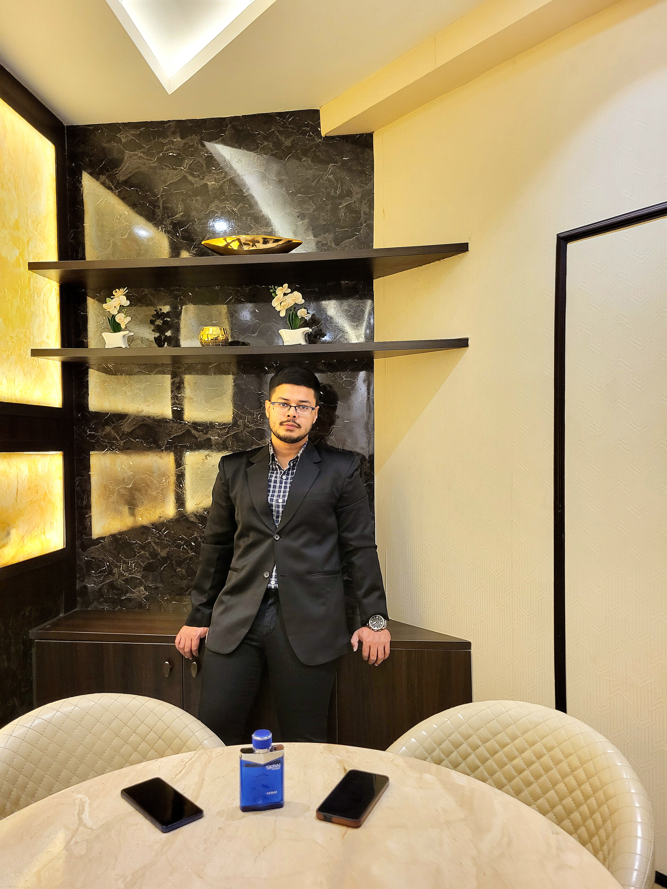
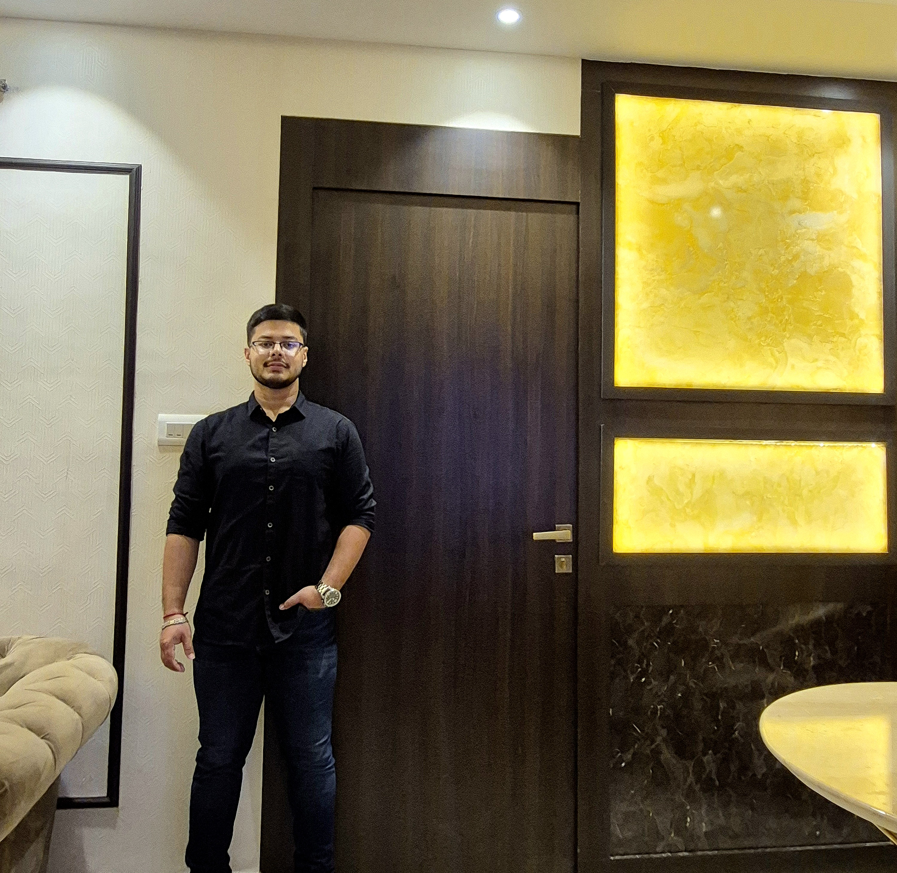
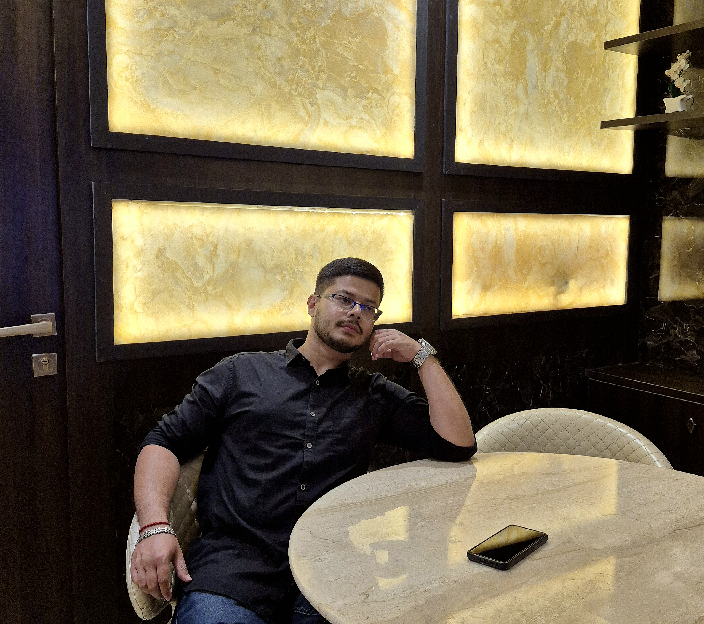
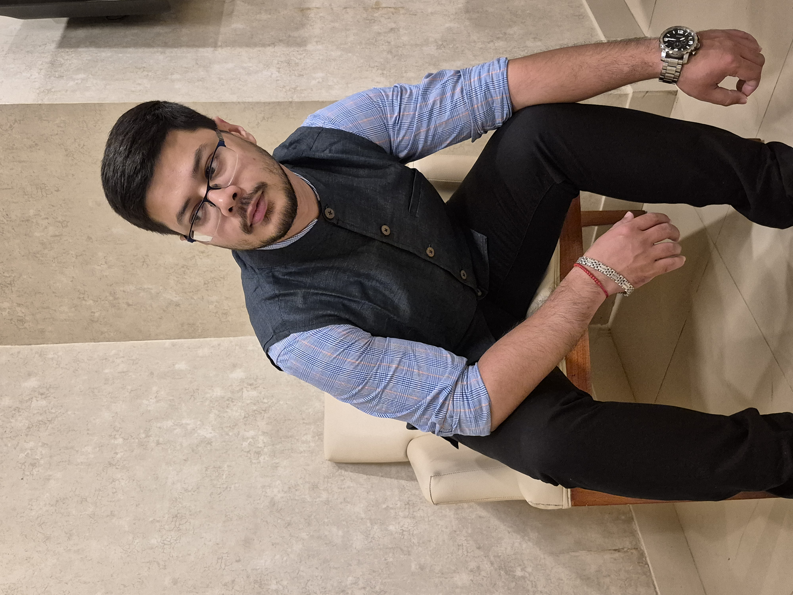
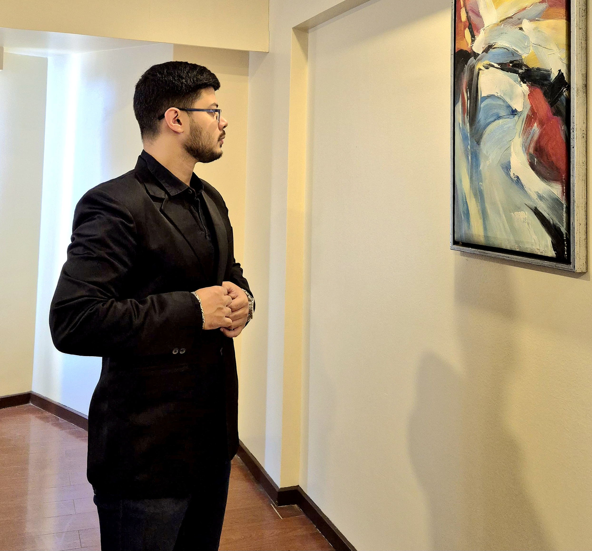
Business · Technology · Research · Creative
Building, researching and creating across disciplines.
A business and technology professional interested in products, organisations, ideas and the human stories behind them.
I work at the intersection of business, technology and ideas.
My professional journey has moved through consulting, technology, SaaS, product delivery and business transformation.
Alongside that professional path, I have continued to explore research, writing, acting, music, travel and storytelling.
I am interested in understanding how people, organisations and technology come together to turn ideas into outcomes.
Explore the journey →The path so far
Every chapter has added a different lens.
Kolkata gave me my earliest connection to acting, music and writing. Engineering taught me how systems work. Consulting taught me how organisations approach complex problems. Management education expanded that perspective towards strategy, decision making and business. Technology and SaaS brought me closer to the products, platforms and people that turn ideas into reality.
Today, my interests sit at the intersection of business, technology, product thinking and research, with a growing ambition to create things of my own and contribute at a larger institutional scale.
Where the creative side began. Acting, music and writing became early forms of expression, curiosity and storytelling.
Engineering brought structure to curiosity. It taught me to think in systems, understand how things work and approach problems analytically.
Consulting became an education in business problem solving. Working with organisations and stakeholders taught me how strategy, execution and technology come together to solve complex business problems.
Management education added another layer to the journey, strengthening my understanding of strategy, finance, organisations, leadership and the decisions that shape businesses.
Technology and SaaS brought me closer to products and the people who build, deliver and adopt them. It is where business thinking, technology and execution increasingly came together.
The next chapter is about creating rather than only contributing. Building products, developing ideas, pursuing research and exploring opportunities to create impact at a larger scale.
Questions worth exploring
I am interested in research that connects academic thinking with problems that organisations and people actually face.
My work explores subjects around technology, product adoption, business transformation, execution and the systems that influence how people and organisations make decisions.
Some questions begin in the workplace. Others begin with observation, curiosity or conversations. The objective is the same: turn those questions into structured ideas, frameworks and evidence that can be examined, challenged and improved.
Visit ResearchGate ↗Research is not a single paper.
It is an ongoing body of questions.The other side
Creativity has always been another way of understanding people and the world around me.
Acting taught me to inhabit another perspective. Writing gave me a way to organise thoughts and observations. Music became another language of expression. Travel became a way to discover people, places and stories while creating and documenting experiences along the way.
These interests may take different forms, but they share the same instinct: observe, create and tell better stories.
In the media
A growing archive of interviews, features, published work, research and conversations.
As the journey develops, this space will bring together the places where ideas, work and creative projects are discussed publicly.
Press enquiries →Moments
People, places, roads, experiences and moments collected along the way.
This visual archive will continue to evolve as new journeys, projects and experiences become part of the story.
View Instagram →Contact
For professional conversations, collaborations, research, creative projects or interesting ideas.
Get in touch
Social
Find me
elsewhere.
Follow the work, ideas, experiments and everyday moments across different platforms.